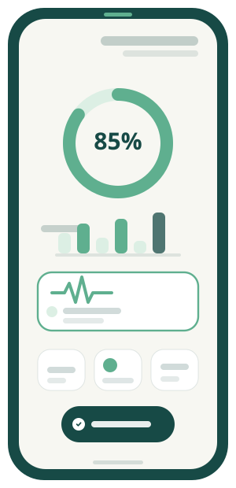
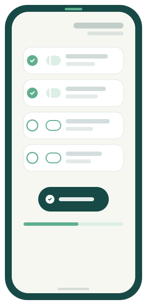
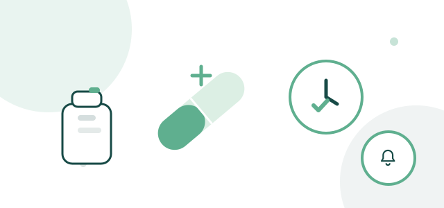

برای درمانجویان
داروها، اقدامات درمانی و وضعیت خود را منظمتر دنبال کنید و با خیال راحتتری مسیر درمان را پیش ببرید.
ویدئوی معرفی یارا
یارا | همراه هوشمند مسیر درمان
یارا به شما کمک میکند برنامه درمانی خود را بهتر دنبال کنید، مصرف دارو و اقدامات درمانی را فراموش نکنید و مسیر درمان را منظمتر ادامه دهید.
گاهی ادامه درمان از جایی سخت میشود که یک نوبت دارو فراموش میشود؛ بعد مصرف دارو از برنامه خارج میشود و پیگیری منظم درمان دشوارتر میشود. همین اتفاقهای کوچک میتوانند ادامه مسیر درمان را سخت کنند. یارا کمک میکند زمان مصرف و روند درمان را منظمتر دنبال کنید.
فراموشی
بینظمی در مصرف
دشواری پیگیری
همراهی یارا
ادامه منظمتر درمان
چرا یارا؟
یارا با کمک به یادآوری، ثبت و پیگیری برنامه درمانی، مسیر ادامه درمان را منظمتر و قابل پیگیریتر میکند.
با نظم بیشتر در برنامه درمانی، ادامه مسیر برایتان سادهتر و قابل مدیریتتر میشود.
زمان مصرف دارو و اقدامات درمانی را بهموقع به شما یادآوری میکند تا چیزی از برنامه جا نماند.
وضعیت، علائم و روند درمان را منظمتر ثبت و دنبال کنید و تصویر روشنتری از مسیر خود داشته باشید.
یارا در کنار شماست تا برنامه درمانی را منظمتر دنبال کنید و ارتباط با تیم درمان را سادهتر پیش ببرید.

یارا چطور کار میکند؟
یارا مسیر درمان را به چند قدم ساده و قابل پیگیری تبدیل میکند تا بدانید چه کاری را، چه زمانی و چگونه دنبال کنید.
برنامه درمانی و فعالیتهای مرتبط با آن را چند دقیقهای در یارا ثبت کنید تا همهچیز یکجا و مرتب داشته باشید.
یارا زمان مصرف دارو و اقدامات درمانی را بهموقع یادآوری میکند تا چیزی از برنامه جا نماند.
مصرف دارو و وضعیت خود را ثبت کنید تا اطلاعات درمانیتان منظم و قابل مرور باقی بماند.
روند برنامه درمانیتان را با دید منظمتری دنبال کنید و با آگاهی بیشتری مسیر را ادامه دهید.
در صورت فعال بودن امکان ارتباط، مسیر درمان را در کنار تیم درمان و با اطمینان بیشتری پیش ببرید.
یارا برای افرادی طراحی شده است که میخواهند مسیر درمان خود را منظمتر دنبال کنند؛ و برای کادر درمان و مجموعههای سلامت که به دنبال راهکارهای بهتری برای همراهی با بیماران هستند.
داروها، اقدامات درمانی و وضعیت خود را منظمتر دنبال کنید و با خیال راحتتری مسیر درمان را پیش ببرید.
با دسترسی به اطلاعات ثبتشده در چارچوب قابلیتهای یارا، پیگیری روند درمان و همراهی با بیمار را منظمتر پیش ببرید.
یک راهکار دیجیتال برای آموزش، همراهی و حمایت از بیماران و برنامههای مرتبط با پایبندی به درمان در مقیاس سازمانی.

چرا میتوانید با خیال راحت مسیر درمان خود را به یارا بسپارید.
یارا با تمرکز بر نیازهای واقعی کاربران در طول درمان طراحی شده است.
ثبت و پیگیری برنامه درمانی را سادهتر میکند تا نظم مسیر درمان حفظ شود.
اطلاعات درمانی شما تنها با اجازه شما در اختیار دیگران قرار میگیرد.
یارا در کنار شما و کادر درمان است و جایگزین پزشک یا تصمیمگیری تخصصی پزشکی نیست.
نکتهها و راهکارهایی برای همراهی بهتر با مسیر درمان

نقش زمانبندی درست مصرف دارو در موفقیت درمان را بررسی میکنیم و توضیح میدهیم یادآوریهای هوشمند چگونه از فراموشی جلوگیری میکنند.
مطالعه مقالهراهنمایی ساده برای ثبت منظم علائم در اپلیکیشن یارا؛ با این کار به پزشک خود کمک میکنید روند درمان را دقیقتر ارزیابی کند.
مطالعه مقالهنکاتی کاربردی برای پرسیدن سؤالهای درست از پزشک و همراهکردن بهتر تیم درمان در مسیر بهبودی و رسیدن به نتایج بهتر.
مطالعه مقالهپاسخ به سوالات رایج درباره یارا و مسیر استفاده از آن
یارا برای افرادی طراحی شده است که میخواهند برنامه درمانی، مصرف دارو و اقدامات مرتبط با درمان خود را منظمتر دنبال کنند و همچنین برای خانوادههایی که در همراهی با مسیر درمان نقش دارند.
امکانات اصلی یارا برای شروع استفاده در دسترس است. برای اطلاع از شرایط و امکانات فعلی، میتوانید آخرین اطلاعات را از داخل اپلیکیشن یا صفحه مربوط به خدمات یارا بررسی کنید.
یارا با یادآوری دارو و اقدامات درمانی، ثبت وضعیت و علائم و کمک به منظمکردن روند درمان، به شما کمک میکند برنامه درمانی خود را سادهتر دنبال کنید.
اطلاعاتی که در یارا ثبت میکنید برای مدیریت و پیگیری مسیر درمان شما استفاده میشود. نحوه دسترسی و اشتراکگذاری اطلاعات باید مطابق قابلیتهای واقعی و سیاستهای حریم خصوصی یارا باشد.
بله. یارا میتواند به کادر درمان در همراهی و پیگیری منظمتر بیماران، در چارچوب قابلیتها و اطلاعاتی که یارا در اختیار آنها قرار میدهد، کمک کند.
یارا برای دستگاههای Android و iOS در دسترس است و کاربران میتوانند متناسب با دستگاه خود از اپلیکیشن استفاده کنند.
یارا در کنار شماست تا ادامه مسیر درمان سادهتر و منظمتر باشد.
اندروید iOS